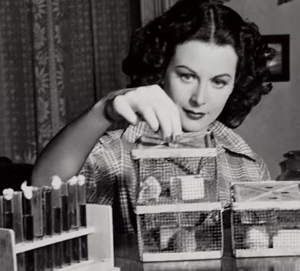

Quem foi?
Hedy Lamarr, nome artístico de Hedwig Eva Maria Kiesler (Viena, 9 de novembro de 1914 — Altamonte Springs, 19 de janeiro de 2000), foi uma atriz e inventora austríaca radicada nos Estados Unidos.
Em 28 anos de carreira, participou de mais de 30 filmes e fez uma importante contribuição tecnológica durante a Segunda Guerra Mundial, uma co-invenção, com o compositor George Antheil, um sistema de comunicações para as Forças Armadas dos Estados Unidos que serviu de base para a atual telefonia celular. Em reconhecimento do valor de seu trabalho e da importância da tecnologia por ela inventada, seu nome foi postumamente inserido no National Inventors Hall of Fame em 2014.
Primeiros Anos
Hedy nasceu como Hedwig Eva Maria Kiesler, em Viena, na Áustria-Hungria, em 9 de novembro de 1911. Era a filha única de Gertrud Lichtwitz Kiesler (1894–1977), uma pianista de família judaica de Budapeste, vinda de uma família de classe média, e de Emil Kiesler (1880–1935), gerente financeiro de um grande banco de Viena. Seu pai nasceu em uma família de judeus da Galícia em Lemberg, hoje a cidade de Lviv, na Ucrânia.Ainda que sua mãe tivesse origem judaica, Gertrud se converteu ao catolicismo por influência de seu primeiro marido e acabou criando Hedy como católica, ainda que ela não tivesse sido formalmente batizada.
O interesse na atuação veio desde cedo, quando Hedy, ainda criança, assistia a peças de teatro e a filmes. Estudou balé e piano até os 10 anos e aos 12 anos, ganhou um concurso de beleza em Viena. Hedy era muito ligada ao pai, com quem tinha conversas sobre política, ciência, tecnologia e ele foi uma grande inspiração para sua invenção futura.
Seu pai faleceu em 1935 devido a problemas cardíacos. Depois da Anschluss, Hedy, que já morava nos Estados Unidos, ajudou a mãe a sair da Áustria e se mudar para o Canadá e depois para os Estados Unidos, onde se tornou cidadã norte-americana

Careira de Atriz
Na Europa, Heidi atuava desde os 10 anos, em 1933 ela estreou “Ecstasy”, de Gustav Machaty. O filme checoslovaco realizado em Praga mostra uma jovem esposa sedenta pelo amor do marido. Closeups de seu rosto durante um suposto orgasmo, e sua corrida nua pela floresta deram notoriedade e, posteriormente, muita dor na cabeça da atriz. Seu marido, Friedrich Mandl, um fabricante de armas, não gostou de se casar com uma mulher com esse passado, e quis destruir o filme, comprando e destruindo boa parte das cópias. Vivendo em um casamento extremamente abusivo, ela resolve fugir para Paris disfarçada de empregada.
Ainda na europa em 1937, ela conhece Louis B. Mayer, diretor da MGM e um dos maiores nomes de Holywood. No começo, ela recusou a oferta do diretor de 125 dólares por semana, mas comprou uma passagem de navio para Nova York, sabendo que encontraria Mayer e a esposa na mesma viagem. Lá, ela impressionou a esposa de Mayer e o próprio diretor, conseguindo assegurar um salário de 500 dólares por semana, mais um contrato. Mayer, por sua vez, a persuadiu a mudar seu nome a fim de distanciá-la da atriz de Ecstasy. Foi a esposa de Mayer, Margaret, quem sugeriu o sobrenome "Lamarr" em homenagem à uma atriz do cinema mudo, Barbara La Marr
Hedy chegou a Hollywood em 1938, onde foi promovida como a "mais bela mulher do mundo". Mayer a apresentou ao produtor Walter Wanger, que estava trabalhando em Algiers (1938), uma versão norte-americana do filme francês Pépé le Moko (1937). Hedy contracenou com Charles Boyer e o filme foi um grande sucesso, em especial devido ao marketing do estúdio sobre o nome de Lamarr. A esperança da MGM é que ela se tornasse uma nova Greta Garbo ou Marlene Dietrich.
Em seus filmes seguintes, Hedy era sempre chamada para fazer os mesmos papéis, a mulher glamorosa e sedutora de origem exótica. Seu segundo filme nos Estados Unidos foi I Take This Woman (1940), onde co-estrelou com Spencer Tracy, sob a direção de Josef von Sternberg, que foi demitido no meio da produção e substituido por Frank Borzage. A produção foi suspensa e enquanto isso, Hedy estrelou em Lady of the Tropics (1939). Seu filme de maior destaque foi Samsão e Dalila de 1949, depois disso sua carreira foi entrando em declínio devido a sua idade e depoir de estrelar The Female Animal de 1958 ela decide se aposentar dos filmes.

A invenção
Lamarr inventou o sistema que serviu de base para os telefones celulares. Durante a Segunda Guerra Mundial, criou um sofisticado aparelho de interferência em rádio para despistar radares nazistas que patenteou em 1940, usando o seu verdadeiro nome, Hedwig Eva Maria Kiesler.
A ideia surgiu ao lado do compositor George Antheil em frente a um piano. Eles brincavam de dueto, ela repetindo em outra escala as notas que ele tocava, experimentando o controle dos instrumentos, inclusive com a música para o Ballet Mecanique, originalmente escrita para o filme abstrato de Fernand Léger, em 1924. Ou seja, duas pessoas podem conversar entre si mudando frequentemente o canal de comunicação. Basta que façam isso simultaneamente.
Juntos, Antheil e Lamarr submeteram a ideia ao Departamento de Guerra norte-americano, que o recusou, em junho de 1941. Em agosto de 1942, foi patenteado por Antheil e "Hedy Kiesler Markey". A versão inicial consistia na troca de 88 frequências e era feito para despistar radares, mas a ideia pareceu difícil de realizar na época.
O projeto não foi concretizado até 1962, quando o aparelho passou a ser utilizado por tropas militares dos EUA em Cuba, quando a patente já expirara; a empresa Sylvania adaptou a invenção. Ficou desconhecida, ainda, até 1997, quando a Electronic Frontier Foundation deu a Lamarr um prêmio por sua contribuição. Antheil morreu em 1959.
A ideia do aparelho de frequência de Lamarr e Antheil serviu de base para a moderna tecnologia de comunicação, tal como COFDM usada em conexões de Wi-Fi e CDMA, usada em telefones celulares. Patentes similares foram registradas por outros países, tais como a Alemanha, em 1935, em que os engenheiros da Telefunken Paul Kotowski e Kurt Dannehl registraram as patentes em 1939 e 1940.
Considerada a "mãe do telefone celular", Lamarr fora casada com um fabricante de armas alemão, do qual se separou ao notar o envolvimento dele com o nazismo; foi nesta época que notara como era fácil a um terceiro bloquear o sinal contínuo usado para o controle dos mísseis. Apesar de ter patenteado a ideia de uma frequência que fosse variável no percurso entre emissor e receptor, não ganhou dinheiro com isto. Em 1997 recebeu do Governo dos Estados Unidos menção honrosa "por abrir novos caminhos nas fronteiras da eletrônica".
Recebeu o EFF Pioneer Award de 1997. Em 2014 foi introduzida no National Inventors Hall of Fame.

Últimos Anos
Em seus últimos anos, a atriz viveu reclusa em sua casa, em Casselberry, região metropolitana de Orlando. Ela recusou vários roteiros, comerciais de televisão, peças de teatro, dizendo que nenhum deles lhe interessava. Em 1974, ela entrou com um processo contra a Warner Bros., no valor de 10 milhões de dólares, declarando que a paraódia de seu nome ("Hedley Lamarr") por Mel Brooks, na comédia Blazing Saddles, era uma invasão de privacidade. O estúdio encerrou o caso com um acordo fora dos tribunais, enquanto Mel Brooks alegou que a atriz "nunca entendeu a piada".
Com problemas de visão, Hedy Lamarr se retirou da vida pública e se estabeleceu em Miami Beach, na Flórida, em 1981.
Em 1996, uma grande imagem de Lamarr ganhou o concurso da CorelDRAW naquele ano para a capa da caixa do produto. Por muitos anos, a partir de 1997, todas as caixas do programa vinham com uma ilustração baseada em uma foto de Lamarr. Ela processou a empresa, alegando que eles usaram sua imagem sem autorização, mas a Corel alegou que Lamarr não tinha os direitos daquela foto. O processo terminou em um acordo em 1999.
O único lucro que Lamarr obteve com sua invenção foi em 1997, quando a companhia canadense WiLAN propôs um acordo com ela para adquirir 49% dos direitos de marketing de sua patente, enquanto ela continuava com 51%. Ela logo ficou muito amiga do presidente da companhia, Hatim Zaghloul.
Hedy e o filho, James Lamarr Loder, cortaram relações abruptamente, quando ele foi morar com outra família. Os dois não se falaram pelos próximos 50 anos e quando Lamarr morreu, James descobriu que ficou fora do testamento da atriz. Ele então entrou na justiça pelo controle dos 3,3 milhões de dólares da atriz em 2000. Ele acabou ficando com 50 mil dólares da fortuna.
Em seus últimos anos, Lamarr entrava em contato com o mundo apenas pelo telefone, mesmo com seus filhos, netos e amigos mais próximos. Ela costumava ficar pendurada no telefone por seis a sete horas todos os dias, mas praticamente não aceitava visitas, nem encontrava outras pessoas.
Hedy Lamarr morreu em Casselberry, na Flórida, em 19 de janeiro de 2000, aos 85 anos. O atestado de óbito cita, como causas da sua morte, insuficiência cardíaca, doença crônica da válvula cardíaca e doença cardíaca arteriosclerótica. Conforme era seu desejo, seu filho, Anthony Loder, levou suas cinzas para a Áustria e espalhou-as nos Bosques de Viena. Em 2014, um túmulo simbólico foi construído no Cemitério Central de Viena.